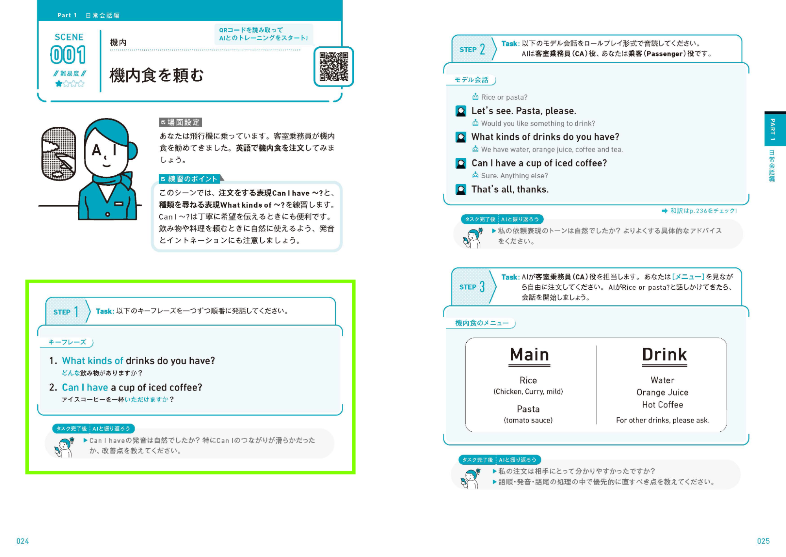
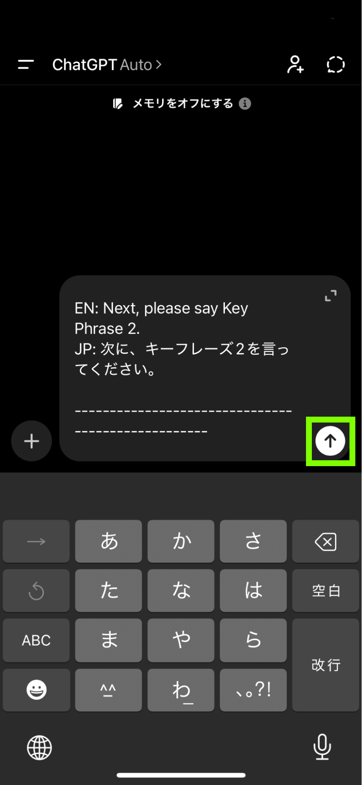
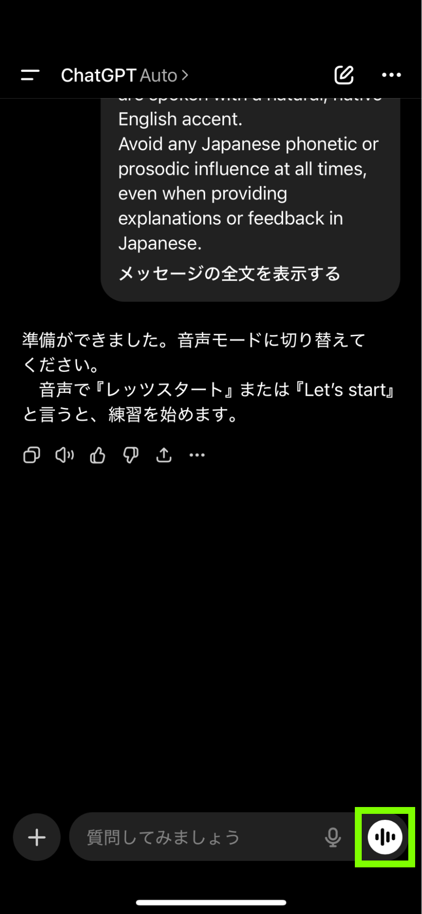
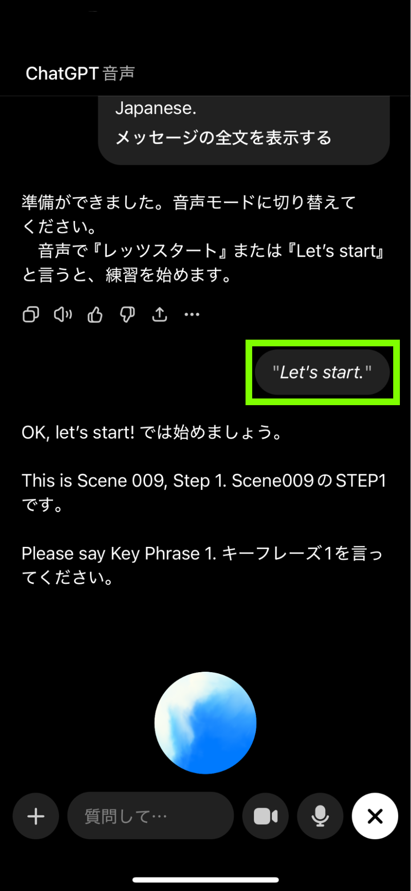
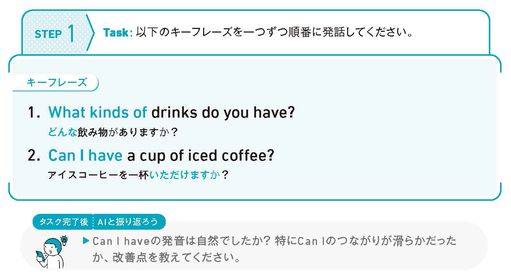
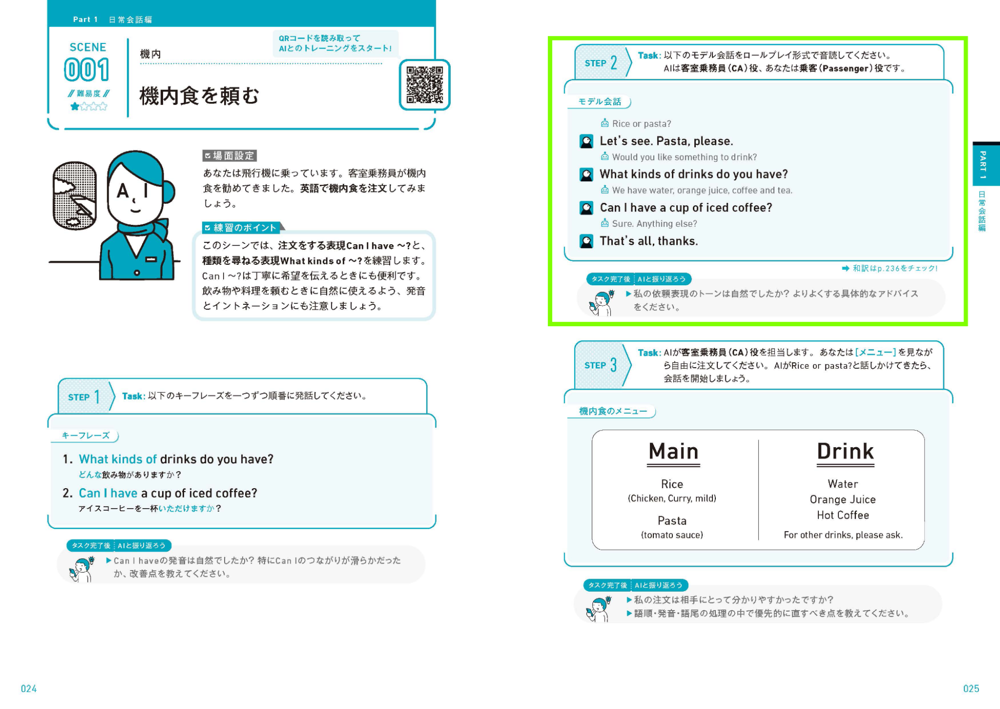
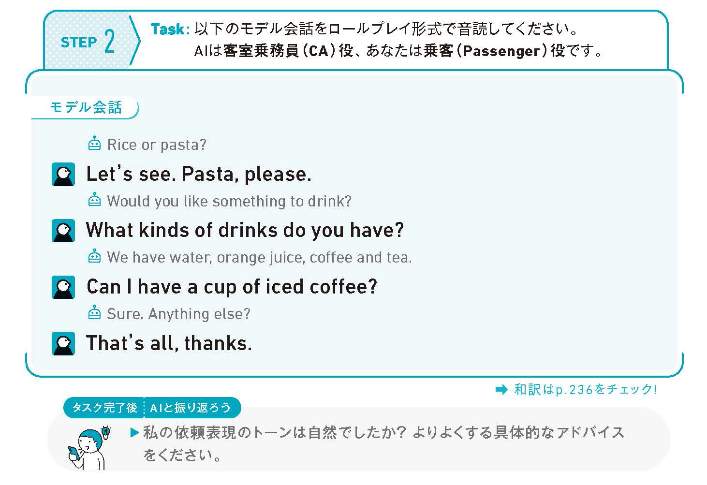
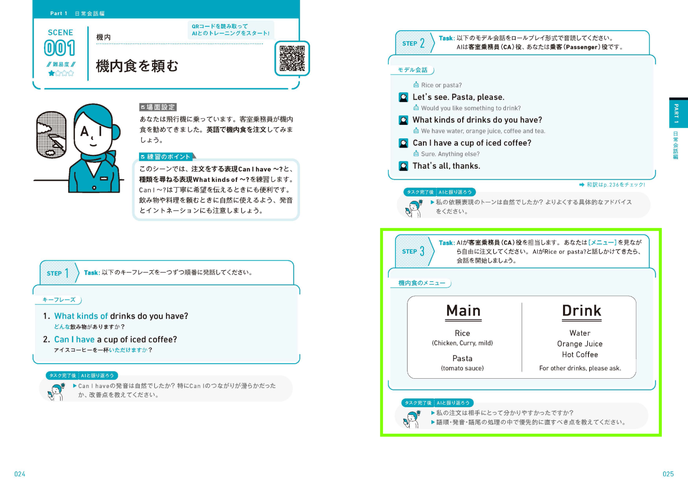
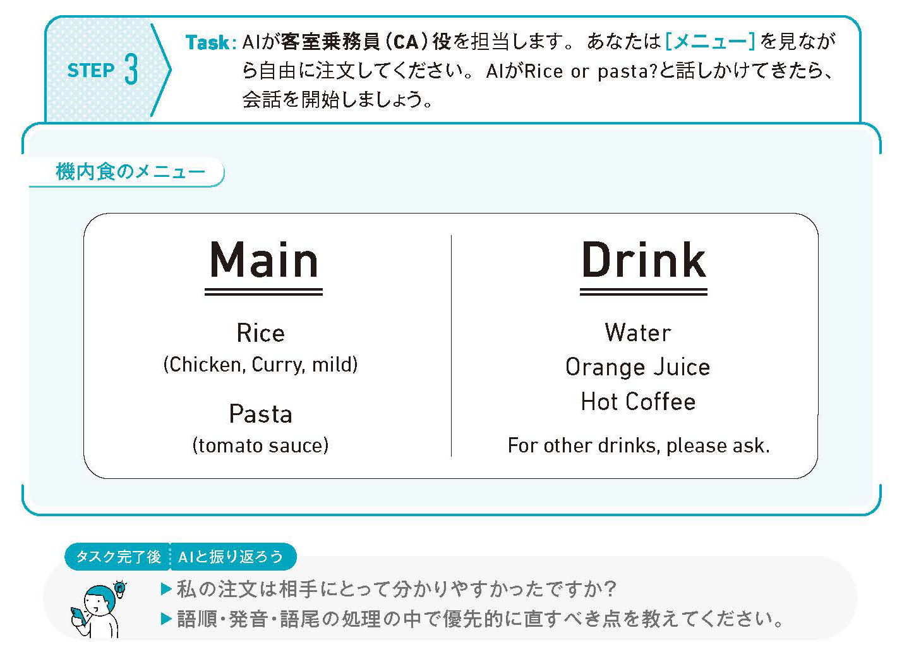

本書の一回分の学習は、すべて見開き2ページで完結しています。各SCENEでは、日常生活や実際の英会話で起こりうる、具体的な場面が設定されています。例えば、飛行機の機内で「機内食を頼む」のように、場面と目的が明確に設定されています。目的が達成できるように、本書では3つの学習STEPが用意されています。
基本的な学習の流れは、3つのSTEPとも共通していますが、取り組む練習が異なるため、順に流れをご紹介します。
STEP1では、そのSceneで使うキーフレーズを確認します。ここでの目的は、覚えきることではありません。声に出して読んでみて、場面に応じた話す準備を行うことです。

では、一連の流れを見ていきましょう。
Guide 02で説明した流れで、プロンプトを読み込み、音声モードを起動します。



紙面に掲載されているキーフレーズの英文を読み上げます。うまく読み上げられていない場合は、読み上げた直後にAIから指摘が入ることがあります。

全ての英文を読み上げた後は、AIから自分の発話に関するフィードバックをもらうことができます。紙面の「AIと振り返ろう」の指示を読み上げてください。
また、紙面の「AIと振り返ろう」を参考にしながら、自分が知りたいと思った点は、どんどんAIに投げかけてみましょう。大事なのは、自分自身で英語力を磨いていくために、どういったポイントをAIと深く突き詰めていけばいいのかを知ることです。
STEP 2では、AIとロールプレイ形式の会話練習を行います。役割や進め方は、すでに決まっています。「何を話せばいいか分かっている」「会話の流れが見えている」という安心できる条件の中で、英会話に参加する練習をします。

Guide 02で説明した流れで、プロンプトを読み込み、音声モードを起動します。
必ず新しいスレッド（会話）で開始するようにしてください。
紙面に掲載されている人のアイコンがついている英文を読み上げます。会話中に止まることはなく、最後まで、AIと交互に音読練習を行います。

STEP 1と同様に、練習が終わった後は、AIとの振り返りを行います。「AIと振り返ろう」の質問や、自分が疑問に思ったことをAIに投げかけましょう。
STEP 2の練習では特に、長い会話の流れの中で自然な読み方ができていたか、違うケースにはどういった表現を使えばいいのか、といったことに焦点を当てると効果的なフィードバックが得られやすいです。
STEP3では、より実際の英会話に近い形で会話を行います。各SCENEによって、設定条件が異なるので、よくタスクの内容を読んでから練習を行なってください。練習中、詰まっても構いません。言い直しても構いません。大切なのは、会話から降りないことです。

Guide 02で説明した流れで、プロンプトを読み込み、音声モードを起動します。
必ず新しいスレッド（会話）で開始するようにしてください。
紙面に書かれているタスクをよく読んで、達成できるように会話をしましょう。SCENEごとに、事前に設定を決めたり、AIの回答を紙面に書き込んだりすることもあります。

STEP 1・STEP 2と同様に、練習が終わった後は、AIとの振り返りを行います。
STEP 2の練習では特に、話の組み立て方の評価をしてもらったり、よりよい伝え方があったのか、うまく英語にできなかったことをどう表現すればよかったか、といったことに焦点を当てると効果的なフィードバックが得られやすいです。
リセットの合言葉は「Let’s start.」
練習を最初の時点にリセットしたいときや、AIの回答が破綻してしまったときなどは、一言「Let’s start.」と言いましょう。
ただし、会話のやり取りは長くなればなるほど、AIの回答の精度は落ちていきます。新しいスレッド（会話）でプロンプトを読み取る方法も有効です。
AIが発話している最中、ユーザーが会話を始めると、AIが会話を途中で止めて、会話のターンが切り替わる機能があります。意図せず、会話練習が止まってしまうことがあるので、途中で会話を遮る必要がないときは、AIの発話の最中は話始めないようにしましょう。